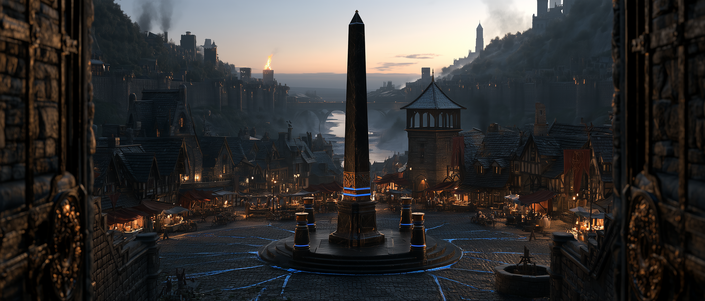

Une cité à bâtir.
Organisez vos ressources, développez vos bâtiments et préparez la prochaine étape de votre royaume.
Bâtissez votre cité. Menez votre héros.
Faites face à ce qui s’éveille au-delà des murs.
Kalendrath se construit autour du PvE, de la gestion d’empire et de la coopération.

LE JEU PREND FORME Une vision d’interface, à explorer dès maintenant.
Autour des Obélisques anciens, les royaumes humains s’enracinent. Mais les Straumar frémissent de nouveau, et les hordes d’orcs et de gobelins se réveillent.
Organisez vos ressources, développez vos bâtiments et préparez la prochaine étape de votre royaume.
Chef de votre royaume, votre héros donne un visage à vos ambitions. Talents et équipement accompagnent sa progression.
Le PvE et la coopération sont au cœur du projet. Préparez vos troupes et partez à la rencontre des forces hostiles.
Cinq regards sur une cité qui grandit.
Les suivants gardent leurs secrets.
Construire, produire, organiser.
Guider, équiper, progresser.
Explorer, affronter, coopérer.
Le moteur est choisi, l’univers est posé.
Nous donnons maintenant forme à l’expérience de jeu.
Concept, lore, choix technique et audit du moteur.
Direction artistique, système visuel et maquettes. Puis le pilote Héros.
Ressources, bâtiments, recherches et premiers adversaires PvE.
Alpha fermée, puis préinscriptions à la bêta avec une date, bêta et lancement.